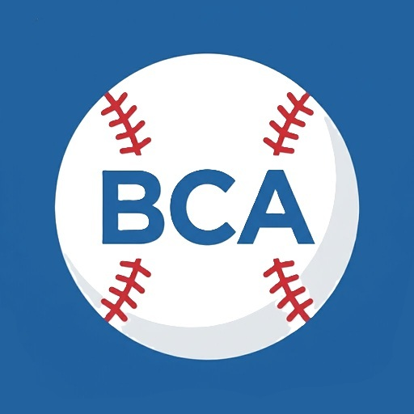

Baseball Counter App
BCA è una web app leggera e installabile. Permette di gestire facilmente il conteggio dei lanci, il conto a casa, outs, innings e il tabellone segnapunti, funzionante anche offline.
✨ Funzionalità principali
- Scoreboard: Tabellone segnapunti per inning con totali automatici ed extra innings.
- Pitch Counter: Conteggio lanci e strike con calcolo dello Strike Rate.
- Simple Strike Counter: Gestione dei balls, strikes, outs ed innings con azzeramento manuale (come il conta strike fisico).
- Advanced Strike Counter: Aggiornamento automatico: al quarto ball azzera il conto, al terzo strike azzera il conto e aggiunge un out, al terzo out azzera i conti e avanza di mezzo inning. Negli altri casi NEXT BATTER azzera il conto.
- Modalità Chiara e Scura: Interfaccia ottimizzata per la massima leggibilità sia sotto il sole del campo da gioco che in condizioni di scarsa illuminazione.
- Modalità Sempre Attiva (Stay awake): Consente al dispositivo di mantenere lo schermo sempre attivo, impedendo lo spegnimento dopo un periodo di inattività (il led in alto a destra ne segnala l'attivazione).
- 100% Offline: Risorse memorizzate localmente.
📱 Come installarla sul telefono
Android (Chrome)
- Apri l'app su Chrome
- Tocca i tre puntini
- Seleziona Installa app o Aggiungi a schermata Home
iPhone / iPad (Safari)
- Apri l'app su Safari
- Tocca Condividi
- Seleziona Aggiungi alla schermata Home
Tecnologie utilizzate
- HTML5 & JavaScript Vanilla: Struttura leggera e reattiva senza dipendenze pesanti.
- Tailwind CSS (Locale): Stile moderno e responsive caricato localmente per garantire il funzionamento offline.
- Font Locali (Inter): Tipografia pulita e ad alta leggibilità con numeri tabellari, caricato localmente per garantire il funzionamento offline.
- PWA (Manifest + Service Worker): Caching locale per l'utilizzo senza rete e installazione nativa su dispositivi mobili.
Versione 1.3 • Licenza MIT